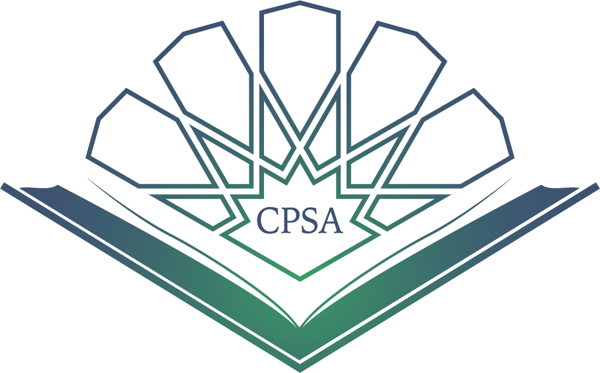

I co-founded a company aimed at educating people who are struggling to make a better living or just those who wish to expand their knowledge base.
I taught 2 full length SAT prep courses to high school students resulting in notable improvements from every student
I tested and listed a variety of electronics for sale online by using a predictive analytical model to analyze which electronics yield the most profit.
I helped set up internet connection throughout the whole school. I also set up all electronics for teachers in their respective rooms. In addition, I tested and maintained any damaged computers, routers, projectors, etc.